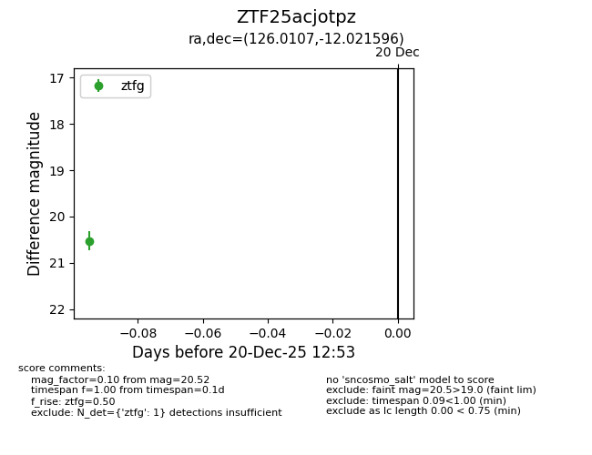
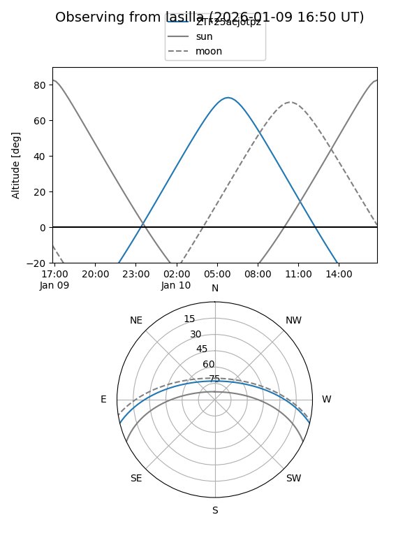
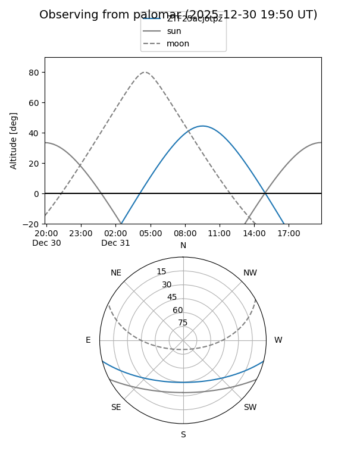

ZTF25acjotpz
Target ZTF25acjotpz at 2025-12-20 12:54
Aliases and brokers:
FINK: fink-portal.org/ZTF25acjotpz
Lasair: lasair-ztf.lsst.ac.uk/objects/ZTF25acjotpz
ALeRCE: alerce.online/object/ZTF25acjotpz
alt names
ZTF25acjotpz (ztf,fink_ztf)
Coordinates:
equatorial (ra, dec) = 126.0107,-12.02160
equatorial (HMS+DMS) = 08:24:02.57,-12:01:17.75
galactic (l, b) = (234.7876,+14.31549)
Flags:
Photometry:
last ztfg=20.52
1 ztfg detections
Lightcurve

Visibility


Additional plots